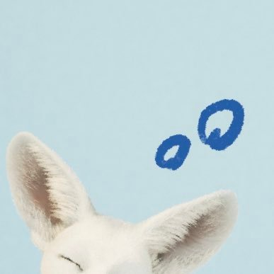

WE GO-6分類：WEGO-6 스스 · 直播日期：2026-10-05時雨 스스 的SpaceXIU 在 YouTube 觀看原始影片×載入 YouTube 播放器 繁中韓文雙語字幕大小20%字幕位置 原先位置懸浮字幕全螢幕劇院模式繁體中文點播放後，字幕會顯示在這裡韓文 1010速度 0.75×1×1.25×1.5×2×00:00 / --:-- 分享這篇@fLINE𝕏 影片翻譯評分☆☆☆☆☆選擇 1～5 星展開雙語逐字稿 點擊查看完整內容雙語逐字稿雙語韓文繁中 自動跟隨播放文字大小 A−A＋重設字幕偏移（秒） 字幕比聲音早出現時填正數00:00:49안녕하세요你好00:01:00왜 안 자고 있어요?怎麼還沒睡？00:01:05혼나셔야겠는데요看來該被罵一下囉00:01:10시우야 보고 싶었어 너무 보고 싶었습니다XIU啊 好想你 我也非常想你們00:01:17오늘 일정 아직 안 끝났어요 연습 중인데 보컬今天的行程還沒結束 我正在練習 練唱00:01:22아 노래 연습하다가 이게 또 너무 좋은 곡을啊 練歌的時候 正好在練一首非常好的歌00:01:27연습하는데 가사가 너무 여러분들께 해드리고 싶은練習的時候 發現歌詞都是很想對呦囉本說的話00:01:35보고 싶어져서 뭐 항상 보고 싶지만 갑작스럽게 켰습니다就想你們了 雖然一直都很想你們 就突然開了直播00:01:53깜짝 스페이스 맞습니다沒錯 是驚喜Space00:02:06밥은 먹었어요? 옷은 따뜻하게 입었어요? 뭐 먹었어요?吃飯了嗎？有穿暖嗎？吃了什麼？00:02:11제가 하고 싶은 말이잖아요 점심 못 드셨어요? 저녁 잘 챙겨 드셨나요?這些都是我想問你們的話嘛 沒吃午餐嗎？晚餐有好好吃嗎？00:02:15옷 따뜻하게 입었죠? 감기 안 걸리셨나요?有穿暖吧？沒有感冒吧？00:02:24시우야 와 줘서 고마워 아니죠 이 시간에 여러분들이XIU啊 謝謝你來找我們 不是啦 呦囉本在這個時間00:02:32저한테 와 주신게 더 감사하죠願意來找我 我才更感謝呢00:02:36아 어떤 노래냐고요?啊 問我是哪首歌嗎？00:02:41이 노래 같은 경우에는 말이죠這首歌呢00:02:51성시경 선배님의 더 아름다워져라는 곡인데 그거를 소수빈 선배님께서是成始璄前輩的《더 아름다워져》 有소수빈前輩00:02:58부르신 버전이 있더라고요 집에 있을 때唱的版本 在家的時候00:03:01아이고 광고가 나오네요 잠깐만요哎呀 跑出廣告了 等一下00:03:05근데 가사도 너무 아름답고而且歌詞也非常美00:06:30사실 아직 이 노래를 여러분께 완벽하게其實 現在要把這首歌完整地00:06:37한 곡을 보여드리기에는完美地唱給呦囉本聽00:06:43아직 많이 부족할 것 같아서 1년이 됐든 2년이 됐든我覺得還差得遠 所以不管是一年還是兩年00:06:51꾸준히 연습해서 언젠가 한번 꼭 들려 드리고 싶어요我會持續練習 希望有一天一定能唱給你們聽00:07:13아 어디서 정확히 생각이 났냐고요?啊 問我到底是哪裡讓我想到你們嗎？00:07:22뭔가 되게 여러분이랑 스페이스 할 때가 생각나就讓我想起跟呦囉本開Space的時候00:07:28가지고所以00:07:55요즘 날씨랑도 감성이 너무 잘 맞아 가지고這首歌的氛圍也非常適合最近的天氣00:08:01여러분들도 왔다 갔다 출퇴근 뭐 등교하실 때 들으면 너무 좋겠다我覺得呦囉本在上下班 或是上學的路上聽00:08:08생각이 들었어요應該會很棒00:08:24슈랑해 때문에 감동이 깨졌어요? 그럼 안 되는데因為슈랑해 感動都被破壞了？那可不行啊00:08:30진심인데 저는我是認真的耶00:08:36지각생 등장遲到的人登場00:08:43아 이제 좀 오늘 하루에 에너지가 조금 채워지는 기분이 드네요 오늘啊 現在感覺今天的能量稍微補回來了 今天00:08:50좀 정신이 없어 가지고 많이 좀 기운이 좀 다운돼 있었는데有點忙亂 所以精神有點低落00:08:58여러분들한테 에너지 받으면 기분이 좋습니다從呦囉本這裡得到能量 心情就會很好00:09:31볼륨 괜찮죠? 좀 큰가?音量可以吧？有點太大嗎？00:09:52누가 그렇게 춤 잘 추래? 아직 많이 부족하죠誰准你舞跳得那麼好的？我還差得遠呢00:09:59더 좋은 모습 보여 드리려고 연습도 노력도 많이 하고 있습니다為了展現更好的樣子 我一直很努力地練習00:10:15시우피디 님 멤버들이 해온 숙제 어떠셨습니까?XIU PD 成員們交來的作業 你覺得如何？00:10:20아 멤버들이 또 욕심을 잔뜩 부렸더라고요啊 成員們也很有企圖心呢00:10:26편집하면서 근데 또 아주 각자의 좀 뭔가 성격이剪輯的時候 但看到那些很能展現各自個性的00:10:33보이는 편집을 보고 너무 재밌어서 한참 웃었습니다剪輯 覺得太有趣了 就笑了好久00:10:52아 볼륨 커서 같이 듣는 기분 들어서 괜찮으세요?啊 音量大一點有種一起聽的感覺 所以沒關係嗎？00:11:00조금만 키울게요 그러면那我再調大一點00:11:07여러분은 어떤 하루 보내셨어요?呦囉本今天過得怎麼樣？00:11:20자꾸 우리한테 와서 충전만 해가고 죄송해요 제가 너무 여러분한테老是來找我們充電 對不起 我真的一直從呦囉本這裡00:11:29충전만 해가고 있죠 빨리 여러분들도 충전시켜 드려야充電呢 得趕快也幫你們充電00:11:35되는데才行00:11:50멤버들이 엄청 재밌어 하더라고요 편집하는 거成員們覺得剪輯很有趣呢00:12:03하루 종일 시우 생각만 했지 음 그래요?一整天都只想著XIU 嗯 是嗎？00:12:11확실해요?確定嗎？00:12:15저는 진짜 여러분 생각만 했는데我真的只想著呦囉本呢00:12:23지금 이 시간이 더할 나위 없는 충전 타임이야現在這段時間就是最棒的充電時間00:12:28아 근데 저도 진짜 그래요啊 我真的也是這樣00:12:48인증해라 우리 생각만 한 거 인증하라고拿出證明 證明你一直想著我們00:12:52이거 어떻게 인증해 드려야 될까? 정신없는 하루 일과를 끝내고我要怎麼向你們證明呢？結束忙亂的一天00:12:59연습을 해야 되는 시간에 못 참고 스페이스를 켜 버린 거면은在本來應該練習的時間 忍不住開了Space00:13:05하루 종일 여러분 생각만 한게 맞지 않을까요?這樣不就代表我一整天都只想著呦囉本嗎？00:13:15내가 더 많이 했는데 인증해 주시겠어요? 저보다 어떻게我想得更多 可以拿出證明嗎？怎麼可能比我00:13:22많이 할 수 있는지 저는 이게 좀想得還多呢？我覺得這件事00:13:27상식적으로 이해가 안 됩니다 네 인증 완료되셨습니다 아用常理實在無法理解 好 已經認證完成了 啊00:13:33감사합니다謝謝00:13:53바보요 제가 어떤 부분에서 바보였지?笨蛋？我是在哪方面像笨蛋呢？00:14:07어제 차PD는 정말 무척 멋진데 어 감사합니다昨天的車PD真的非常帥呢 啊 謝謝00:14:15사실 좀 제가 PD를 하는 거라 좀 걱정을 많이 했었는데其實因為是我當PD 所以有很多擔心00:14:21또 멤버들도 재밌게 잘但成員們也很開心地00:14:26즐겨 주어서 기분도 좋고 그렇더라고요一起享受其中 我也覺得很開心00:14:35자다가도 잠꼬대로 차시우 하면서 깰 지경連睡覺都會說夢話 喊著車XIU醒來00:14:40차시우도 좋고 WE GO-6 하면서 깨는 것도 나쁘지 않을 것 같네요喊車XIU也不錯 喊著WE GO-6醒來好像也不錯呢00:14:54일어나서 생각하고 자기 전에 생각한다고요?起床的時候想我 睡前也想我？00:14:58그러면은 중간에는那中間的時間00:15:01안 하시는 건가요?都不想我嗎？00:15:22시우 어떻게 갑작스러운 공격을 할 수 있나요? 알림을 받지 못했습니다XIU怎麼可以突然襲擊呢？我沒有收到通知00:15:27아 이게 기습 슈페슈를 공격이라고 번역이 된 거 같은데啊 好像把突襲Space翻譯成攻擊了00:15:34아 이게啊 這個00:15:37그냥 진짜 너무 늦어서 아 켜면 안 되겠지真的因為太晚了 本來想說不能開吧00:15:42하다가 그냥 에라 모르겠다 하고 켜버렸어요後來就想 算了不管了 就開了00:15:48내가 보고 싶은데 어떡해요? 켜야지 그럼我就是想你們嘛 能怎麼辦？那就要開啊00:15:59아 오늘 밥이요? 오늘 그 볶음밥 먹었어요啊 今天吃了什麼嗎？今天吃了炒飯00:16:08점저午晚餐00:16:11전에 운동 갔다가 운동을 조금 과하게 해서 그런가?之前去運動 是不是運動得有點太過頭了？00:16:19배가 안 고파서 안 먹다가 점저 먹고 그리고 지금 계속 일정이 있었어서肚子不餓就沒吃 後來吃了午晚餐 然後一直有行程00:16:27아직 못 먹었는데所以到現在還沒吃00:16:38에라 모르겠다 계속되길 에라 모르겠다 저건 매일 하고希望算了不管了能繼續下去 算了不管了 我每天都在這樣00:16:44있는데做呢00:16:48카페인이요? 카페인咖啡因嗎？咖啡因00:16:52오늘今天00:16:55두 잔 두 잔 먹었어 두 잔喝了兩杯 兩杯00:17:07배가 그렇게 막 많이 고프지는 않아서 아직은肚子還沒有那麼餓 現在還好00:17:20식단용 프로틴 볶음밥 이런 거 아니겠지? 아 아닙니다 아닙니다不會是控制飲食用的蛋白質炒飯吧？啊 不是 不是00:17:25맛있는 거 먹었어요我吃了好吃的東西00:17:3412시 땡하고 두 잔이요? 그러면 50분 만에 두 잔 마신 거十二點一到就喝了兩杯？那不就是五十分鐘內喝了兩杯00:17:39아니에요? 아 그거는 아닙니다嗎？啊 不是那樣00:17:50와 노래 너무 좋다哇 這首歌真好聽00:17:56디오 선배님의 Don’t You라는 곡이네요是D.O.前輩的《Don't You》00:18:09갑자기突然00:18:13딱 화면으로 뭔가 시선이 갔어요 아 오늘의 소소한 행복이요視線就移到螢幕上了 啊 今天的小確幸嗎？00:18:23오늘의 행복이 있었나?今天有什麼幸福的事嗎？00:18:28오늘은 조금今天有點00:18:38소소한 행복보다는 좀 더 치열하고 머리 아픈比起小確幸 更多的是激烈又讓人頭痛的00:18:44고뇌의 과정이 더 많기는 했는데苦惱過程00:18:50또 소소한 행복을 찾는 것도 중요하니까不過找到小確幸也很重要00:18:55음 뭐가 있을까?有什麼呢？00:19:04보컬 연습을 하면서 깨달음까지는 아니지만練唱的時候 雖然還稱不上領悟00:19:09뭔가 어렴풋이 느끼던 것을 한 1% 정도의 확신을 더 가졌다는但原本只有模模糊糊感受到的事情 又多了大約百分之一的確信00:19:17거 같습니다 지금은 커다란 행복이라 뺀 거지大概是這樣 現在是巨大的幸福 所以沒算進去吧00:19:23그죠 그리고 지금은 이미 12시가 지나버렸잖아요對啊 而且現在已經過了十二點嘛00:19:31지금이 소소한 행복이라고요? 지금은 너무 거대한 행복이죠現在就是小確幸？現在是非常巨大的幸福啊00:19:44오늘의 내 행복 지금 이 슈페슈 나의 행복은 시우의 슈페슈我今天的幸福就是現在的XIU Space 我的幸福是XIU的Space00:20:01광고가 많이 나오네 아 여러분 그래도 또 평일이라好多廣告啊 啊 呦囉本 畢竟是平日00:20:08뒤에 연습도 남아 있고 1시에는 종료를 해야 됩니다後面還有練習 所以一點就得結束00:20:148분 안에 우리 많은 이야기를 나눠야 해요我們要在八分鐘內聊很多事情00:20:19아 참啊 真是00:20:25오래오래 좀 하고 싶은데很想聊久一點呢00:20:33아 소소한 행복 기억났다 우리 멤버들이 PD룸으로 편집한啊 想起小確幸了 就是看成員們用PD룸剪輯的00:20:42영상들 보기影片00:20:49빨리 말 빠르게 하자 알겠습니다 여러분趕快講 講快一點 好 呦囉本00:20:55여러분은 지금 잘 준비 다 마치셨죠?呦囉本現在都準備好要睡了吧？00:20:59집이죠 아직 밖에 있고 그런 거 아니죠在家吧？不會還在外面吧？00:21:06단속 들어갑니다要開始檢查囉00:21:18누구 영상이 제일 기억에 남냐고요?問我誰的影片最讓我印象深刻嗎？00:21:24저는我呢00:21:29아 저는 맨 처음에 원래 제가 했던 거를 그 파핑 챌린지를 제가 해서 아啊 我本來最先打算把我跳的那個Poppin挑戰00:21:37올려야겠다 했는데 쿠우타가 갑자기上傳 結果Kuta突然00:21:41저한테 이제 카톡으로 형 이거 제가 올릴게요 이미 다用KakaoTalk傳來 哥 這個我來上傳 他已經全部00:21:47완성을 해서 보낸 거예요 서 아 내가 하려 그랬는데 이래 가지고做完傳給我了 所以我就說 啊 我本來想做的00:21:54왜냐면 이게 또 라이브다 보니까 조금씩의 그 미세한因為是在直播裡跳的 所以會有一些細微的00:22:02그 춤이랑 노래랑의 차이가 있거든요 그래서 저는 그걸 엄청 중요히舞蹈和音樂的差異 我又非常重視這件事00:22:09생각하는 늑대다 보니까 그거를 맞춰서 이제 올리고 싶었는데 이제 쿠우타가因為我是很在意這種事情的狼 所以想調整好再上傳 但Kuta00:22:15이미 다 만들었다 그래서 어 아 그래 그래 쿠우타야 어 만들었으면은 쿠우타가已經全部做好了 所以就說 啊 好 好 Kuta啊 既然做好了 就由Kuta00:22:19올리자 이렇게 얘기하고 근데 우연이 형이 갑자기上傳吧 然後羽然哥突然00:22:25방금 얼마 안 됐었던 거 같은데 아니 저녁 한 8시쯤이었나好像是剛剛不久前 不對 是晚上八點左右嗎？00:22:32이렇게 똑같은 영상을 그래서 편집해서 오신 거예요 그래서也把同一支影片剪輯好拿來了00:22:37시우야 나 이거 나도 이거 올리고 싶은데 이러면서 가져오셔 가지고說XIU啊 這個我也想上傳 然後拿來給我00:22:44그래서 제가 아 그러면 형 아직 안 올렸으면 혹시 제가 좀所以我就說 啊 那哥 如果還沒上傳的話 我可以稍微00:22:49편집 좀 해 드려도 괜찮을까요? 해가지고 조금 음악 싱크 조금 맞춰幫你剪輯一下嗎？就稍微調整了一下音樂的同步00:22:56드리고 그렇게 해서 다시 드렸어요然後再交還給他00:23:05제가 너무 좋아하는 곡이라 조금만這首歌我非常喜歡 所以稍微一下00:23:25사랑받는 리더 아 그러게요受到喜愛的隊長 啊 是啊00:23:37싱크 엄청 잘 맞추더라 아 아니에요音畫同步調得真好 啊 沒有啦00:23:41이게 싱크가 뭔가 잘 맞추고 이런 거보다는 제가 춘 춤이다 보니까 제가與其說我很會調同步 因為那是我自己跳的舞00:23:48어디에 맞췄는지가 저는 알잖아요 그래서 저 원래所以我知道自己對的是哪個拍點嘛 我本來00:23:54박자를 되게 늦게 타는 편이라 근데 이게 좀 어쩔 수 없이就習慣把拍子踩得比較晚 但直播的時候難免00:24:01라이브에서 할 때는 조금씩 뭐 밀리거나 빨라질 때가 있어서偶爾會有些延遲或提早00:24:10네 그래서 박자가 그냥 딱 맞는 거를 그냥 좀對 所以我只是把剛好對上的拍子00:24:17제가 맞춰서 춘 대로 그냥 조금 늦춘 것뿐입니다照著我跳舞時對的節奏 稍微往後調而已00:24:55백현 선배님 곡 중에서 최애곡이요?伯賢前輩的歌裡 最喜歡哪一首嗎？00:25:00좋아하는 곡들이 너무 많아서喜歡的歌太多了00:25:11이곡도 너무 좋아하는 곡 중 하나고 어這首也是我非常喜歡的歌之一00:25:17Love Scene《Love Scene》00:25:20그리고 UN Village도 너무 좋아하고還有《UN Village》也非常喜歡00:25:25Candy도 너무 좋아해요也非常喜歡《Candy》00:25:35사장님 시간 추가요 아 근데 저 아 마음 같아선 여러분 진짜老闆 加時間 啊 其實我 如果照我的心意 呦囉本 我真的00:25:41세네시까지 잡아두고 싶은데 근데 그러면은 안 돼요 여러분도很想把你們留到三四點 但那樣不行 你們也00:25:49주무시고 일정이 있으니까 저도 연습해야 될 것도 있고得睡覺 也有行程 我也還有要練習的東西00:25:59쿠우타가 시우 보고 평소에는 귀엽다고 하더라 막내한테 귀여움 받는Kuta說XIU平常很可愛呢 原來是會被老么說可愛的00:26:06리더였어隊長啊00:26:09그러게요是啊00:26:16아 그래요? 우리 딱 5분만 더 할까요?啊 是嗎？那我們再聊五分鐘好嗎？00:26:211시 5분 어때요? 딱 5분만 더 할까? 괜찮아요 여러분?一點零五分 怎麼樣？再聊五分鐘好嗎？呦囉本可以嗎？00:26:34어떻게 생각해요?你們覺得呢？00:26:4350분 난 좋아 아 5분이야 5분五十分鐘 我喜歡 啊 是五分鐘 五分鐘00:26:53아 오늘도 여러분이 너무 필요한 하루였습니다啊 今天也是非常需要呦囉本的一天00:27:07멤버 중에서 누가 제일 귀여워요? 아 근데 이거는成員裡誰最可愛？啊 這個呢00:27:12좀 그 약간 뭐라 해야 될까? 조금 조금씩有點該怎麼說呢？會有一點點00:27:19시기마다 차이가 있는 거 같아요 막 쿠우타가 제일 귀여웠을 때도 있고隨時期改變 有時候Kuta最可愛00:27:25제로가 제일 귀여웠을 때도 있고 최근에는 우연이형이 제일 귀여우셨는데有時候Zero最可愛 最近羽然哥最可愛00:27:33아 요즘 태강이도 조금 귀엽고 네啊 最近泰岡也有點可愛00:27:39요즘은 약간 넷이서 다 비슷비슷한 거 같아요最近他們四個好像都差不多00:27:52맞아 때에 따라 달라요對啊 會隨時候改變00:28:05오늘은 누가 귀여웠어? 아 오늘은 제로가 조금 귀여웠던 거今天誰很可愛？啊 今天Zero有點可愛00:28:10같네요我覺得是他00:28:14뭔가 사실 제가 작업할 때 좀 많이 예민해지는 편인데其實我工作的時候 會變得比較敏感00:28:20제로가 슬쩍 형님 형님 배 안 고프세요? 이러면서 뭔가 일부러라도Zero就悄悄問 哥 哥你不餓嗎？好像就算是特地00:28:29뭔가 말을 한 번 더 걸어 주려고 하는 거 같아서 뭔가 그 마음이 좀也想再多跟我說一句話 我有感受到那份心意00:28:34느껴져서 뭔가 되게 귀여웠습니다所以覺得他非常可愛00:28:59스윗 아깽이라고요?說是貼心小貓嗎？00:29:20아 어제 챌린지 찍을 때 호랑이 시우가啊 昨天拍挑戰的時候 老虎XIU00:29:25나왔다고요? 아이 그거는 호랑이 축에도 못 껴요 여러분出現了？那根本還稱不上老虎啦 呦囉本00:29:33그거는음 그거는 표범 표범那個是豹 豹00:29:55그니까 사실 그거죠所以其實就是這樣00:29:59어쨌든 저희가 챌린지를 라이브에서 찍는 거기도 하고畢竟我們是在直播裡拍挑戰00:30:05이게 뭔가 제가如果我00:30:12거기 틀렸습니다 이렇게 막 흐름을 계속 끊는 거는 당연히 좋지 않다고一直說那裡跳錯了 這樣不斷打斷進行 當然不好00:30:17생각하고 이제 뭔가에 도움을 드릴 때도我是這麼想的 而且想幫忙的時候00:30:22멤버들한테 혹시 좀 이렇게 좀 뭔가를 드려도也會問成員 我可以稍微給你一些00:30:26괜찮을까요? 이렇게 리스펙을 하면서 저는 이렇게建議嗎？我會抱持尊重的態度00:30:30말을 해 주려고 하는 편인데 이게 아무래도 여러분들은 뭐 당연히盡量這樣跟他們說 畢竟呦囉本當然00:30:37WE GO-6가 춤 열심히 하고 이런 것들을 알지만 어디선가 처음知道WE GO-6一直很努力練舞 但有人第一次00:30:45알고리즘을 내리다가 딱 봤을 그 영상이 저희의 첫 인상이 될 수도滑到推薦影片時 看到的那支影片 可能就是對我們的第一印象00:30:50있는 거잖아요 그래서 그래도 최소한의 디테일과對吧？所以即使如此 最基本的細節00:30:56이런 것들은 너무 중요하다고 생각이 들기 때문에這些事情我還是覺得非常重要00:31:15호랑이 슈를 보고 싶다고요? 여러분 저녁 못 드셨어요?想看老虎XIU？呦囉本沒吃晚餐嗎？00:31:41아 동선 누가 짰어 할 때 약간 무서웠다고요? 아니에요 아니에요啊 問動線是誰排的那時候 有點可怕嗎？不是啦 不是啦00:31:45그냥 진짜 물어본 거예요 아 뭐야 아깽이잖아라고요?真的只是問問而已 啊 什麼啊 就是小貓啊？00:31:52근데 궁금한 게 있어요 아깽이라는 게 여러분들이 아기 고양이라 그랬잖아요不過我有個問題 你們說아깽이是小貓嘛00:31:57근데 왜 깽이가 고양이에요?可是為什麼깽이是貓呢？00:32:10안 먹었는데 어흥해 보시지沒吃 你就吼一聲看看啊00:32:15어허 안돼 1분뒤에 가야 된다不行 一分鐘後要走了00:32:32고양이 고양이 고양이 고양이 고양이 굉이 굉이貓 貓 貓 貓 貓 고양이 굉이 굉이00:32:38우와 신기하다 아 사투리로 깽이라고 해요哇 好神奇 啊 方言叫깽이啊00:32:57안 돼 여러분不行啦 呦囉本00:33:03아 근데 시간이 진짜 왜 이렇게 빨리 가는 거지? 진짜로啊 可是時間怎麼真的過得這麼快？真的00:33:13어쨌든 여러분總之 呦囉本00:33:17다음에 조금 일정이 조금이라도下次行程稍微00:33:23괜찮아질 때 좀 길게 길게 같이比較有空的時候 我們就聊久一點00:33:28이야기할 수 있게 하겠습니다 오늘 하루도讓我們可以一起好好聊 今天也00:33:34수고 너무 많으셨어요辛苦了00:33:38자 여러분 저랑 약속해야 될 거 아무런 걱정 없이來 呦囉本 要跟我約定 不要有任何擔心00:33:47푹 주무시기 약속好好睡一覺 約好了00:33:53알았죠?知道了吧？00:34:03푹 자고 내일도好好睡 明天也00:34:07같이 힘내 봐야죠 오늘 진짜 고생 많았어요一起加油吧 今天真的辛苦了00:34:19꿈에서 같이 놀아줄 거지? 저 밤새서 놀아야지 꿈에서會在夢裡陪我玩吧？要在夢裡玩一整晚才行00:34:25약속한 거예요約好了喔00:34:32근데 가기 싫다可是我不想走00:34:3710초 느리게 셀게요十秒 我會慢慢數00:34:47시우 충전 조금 됐어? 아 지금 한 30%였는데XIU有充到一點電嗎？啊 剛才大概只有百分之三十00:34:53한 95%까지 찬 거 같아요 감사합니다 여러분現在好像充到百分之九十五了 謝謝呦囉本00:35:0010 910 900:35:048 78 700:35:096 56 500:35:134 34 300:35:172 12 100:35:22안녕 여러분 푹자야 되죠? 바이바이再見 呦囉本要好好睡喔？拜拜00:35:33여러분 좋은 꿈 꾸세요 안녕呦囉本 做個好夢 再見00:35:43나잇 위나잇 여러분 나잇晚安 WE night 呦囉本 晚安00:35:49안돼不行其他語音紀錄KUTA 스스 的Space直播日期：2026-10-06WE GO-6 · WEGO-6 스스WE GO-6›WE GO-6 出道宣傳大作戰 #3直播日期：2026-10-04WE GO-6 · YOUTUBEWE GO-6›WE GO-6 위데알대 LIVE EP.3 TEASER #아이돌_위고식스發布日期：2026-10-04WE GO-6 · YOUTUBEWE GO-6›時雨 스스 呦囉本~直播日期：2026-10-03WE GO-6 · WEGO-6 스스WE GO-6›